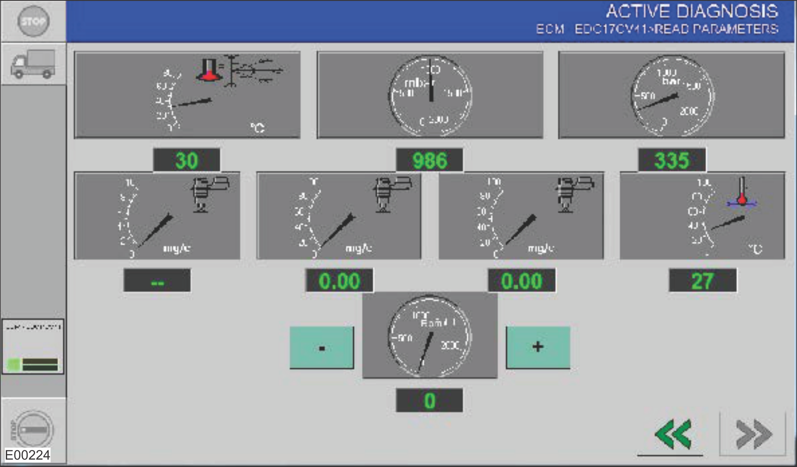

Check the ECU Parameters Reading
Prepare to check the ECU parameters reading.
Check that the battery voltage is sufficient.
Check that the vehicle fuses are OK.
Check that the connectors and plugs are okay. There should be no loose contact or corrosion.
Start the engine by turning the key to the START position.
Connect the PT-Box tool and navigate to Active Diagnosis, then Parameters Reading.
Check the ECU parameters reading.
Note
This procedure is used to modify and maintain the engine speed and analyze the performance of a number of pressure and injector parameters. Adjustment is possible in the range from idle to 2300 rpm. Tools for modifying the following parameters are arranged on the screen page (click on the instrument to visualize the name of the measurement channel).

Check and modify the boost air temperature (air temperature in intake manifold).
Check and modify the relative boost air temperature (difference between absolute supercharge pressure and ambient pressure).
Check and modify the target fuel pressure (target fuel pressure value to be reached by the ECU).
Check and modify the fuel pressure (pressure in the fuel rail).
Check and modify the pre-injection fuel delivery (quantity of the fuel injected per cycle during pre-injection (certain rpm only)).
Check and modify the main fuel delivery (main fuel quantity injected per cycle).
Check and modify the total fuel delivery (quantity of fuel injected per cycle, including pre-injection and main injection).
Check and modify the coolant temperature (temperature of coolant to obtain engine cooling effect).
All values should be within the specified range or similar to the typical value. The following table shows the parameters acquired through the PT-Box and the expected or typical values.
Value
Description
IGN_On 0 rpm
ENG_On 900 rpm
ENG_On 1500 rpm
Unit
Engine Revolutions
0
900
1500
rpm
Injection Advance
0
2.09
−1.78
°
Battery Voltage
24
28.02
27.74
V
Turbocharger Actuator
N/A
N/A
N/A
%
Boost Pressure
994
981
1017
mBar
Oil Pressure
1
4705
4969
mBar
Coolant Temperature
18
45.16
55.76
°C
Fuel Temperature Sensor
18
22.86
24.06
°C
Oil Temperature
19
42.56
56.46
°C
Main Fuel Quantity
0
11.12
23.8
mg/str
Fuel Introduced Pre-Injection
0
2.18
2
mg/str
Total Fuel Introduced
0
15.2
25.8
mg/str
Current Injection Quantity
0
15.1
25.82
mg/str
Cylinder Air Mass
0
239.4
244.9
mg/str
Fuel Pressure
0
475.7
903.4
bar
Fuel Pressure Setpoint
337.6
472.9
893.8
bar
Intake Air Quantity
0
1197
1224.5
mg/st
Humidity Sensor
23
15.44
17.55
%
Humidity Sensor Voltage
1564
1368.4
1417.2
mV
If the parameters are NOT OK, investigate these possible root causes:
Check for electrical defect of fuel and/or air system components. Check the wiring harness and component electrically.
Check for mechanical defect of fuel and/or air system components.
Engine mechanical defect
Locate and correct the cause of the damage, then use the PT-Box tool or LogOn to clear all fault codes and verify that the fault is resolved.
If the parameters are OK, go to the next step.
The electronic control unit (ECU) works properly.